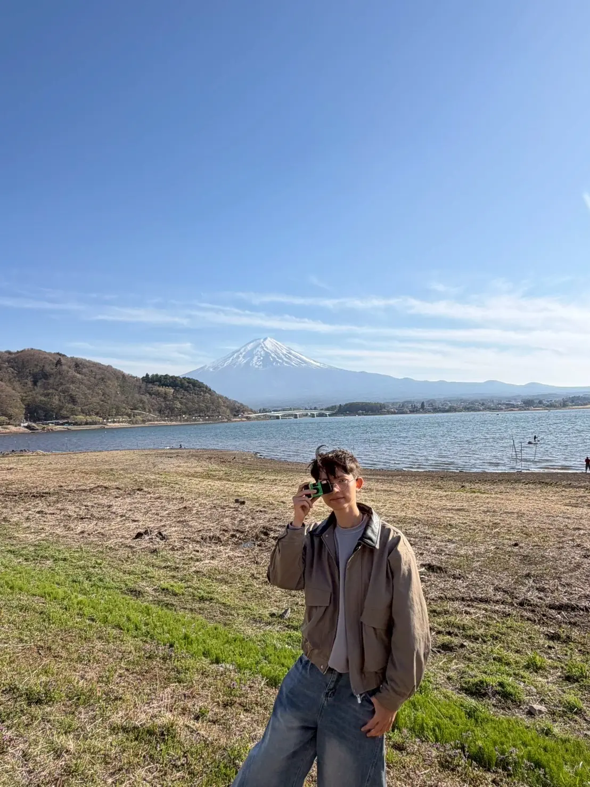

Technical PM / 數位轉型 PM｜景觀全局思維 × 工程邏輯 × 需求轉譯者｜國泰醫院後端首年實戰 → 山莎蔓岸共同創辦人
職涯的起點是景觀設計。輔仁大學景觀設計系期間，參與多個農村社區營造計畫，深入土地、文化與居民之間。從 2D 平面、3D 模型到現場成果展示，這段訓練養成的不只是設計能力，更是「如何讓居民、政府、設計師對同一份願景產生共鳴」── 這份「全局利害關係人思維」，後來成為做 PM 最核心的底層工具。
在社區規劃過程中觀察到一個現象：基礎設施逐步完善，資訊化建設卻明顯停滯。這種數位落差促成了第二次跳板 ── 先完成 UX/UI 設計班，再進入資策會跨域 Java 軟體工程師就業養成班（570 小時），從基礎程式語言、後端邏輯到資料庫設計，逐步建立構建應用系統的核心能力。
2025 年進入國泰世華總醫院擔任資訊維運工程師（助理程式師），完成第一年正職實戰。這一年具體沉澱出對「生產系統」與「練習專案」的差距感：問卷／表單類功能的迭代與訪談、醫療與行政單位的需求收斂與技術轉譯、核心 Web 系統由 IE 遷移到 Chrome／Edge 的 Legacy 升級專案、跨部門溝通與 UAT 上線。這段大型醫療系統的維運經驗，培養出 Technical PM 最重要的「嚴謹的工程邏輯」── 在團隊內用工程師聽得懂的語言進行精準的 MVP 範疇切片。
與醫院實務並行，與賽夏族族人共同創辦山莎蔓岸竹木產業生產合作社，擔任數位轉型 PM 兼前端開發者。職責是把現場零散的活動紀錄、學術訪視照片與田野素材，結構化為清晰的數位內容架構；同時針對偏鄉沒有預算養工程師的真實痛點，獨立打造零伺服器成本的自動化預約工作流，取代傳統人工電話登錄。在多方協作的環境中擔任溝通橋樑，把團隊共識轉譯為清晰的技術規格。
融合景觀全局思維、創生執行力與醫療嚴謹性，兼具技術硬實力與設計同理心 ── 這就是我現在的職涯定位：一位精準對接技術與市場的 Technical PM。在 AI 把「把東西做出來」的門檻民主化之後，市場真正稀缺的能力，已經從「寫代碼」轉為「把複雜需求收斂成正確的規格」。我不擅長畫無法落地的商業大餅，但擅長成為技術與業務之間的橋樑 ── 如果你正在找一位能與工程師無縫對齊的夥伴，期待與你聊聊。
